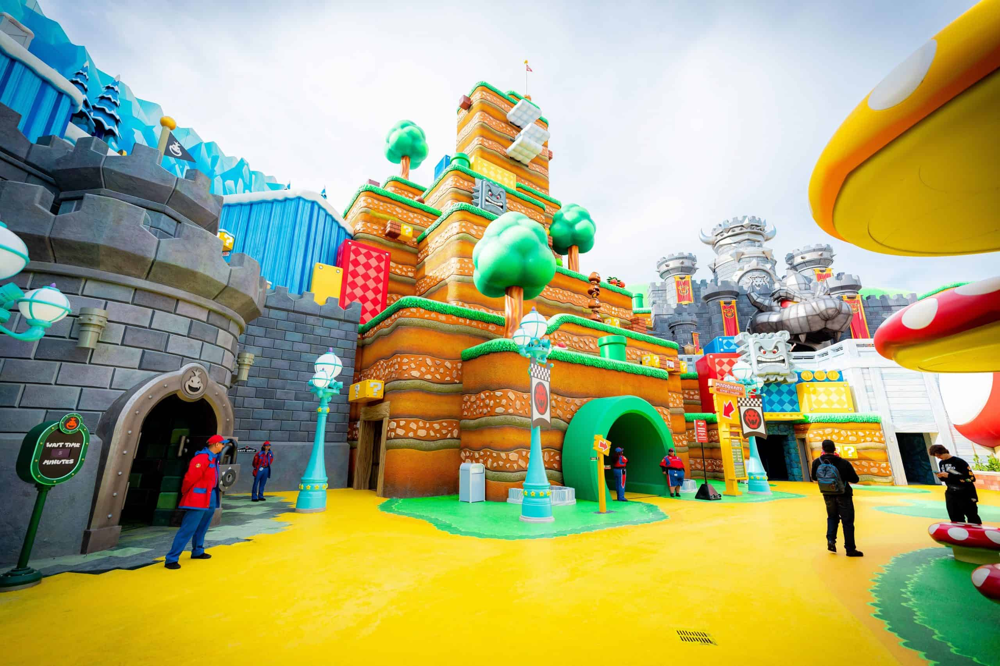

Zona Otaku

Pokemon Center Tokyo
En Japón podemos encontrar tiendas de Pokemon llamadas "Pokemon Center" en honor a lugar donde llevabamos a nuestros pokemones para que se curen, este es el paraiso para todo fanático de la franquicia ya que es una de las tiendas mas grandes de todo Japón donde vas a poder comprer mercancia variada de Pokemon.

Super Nintendo World
Para los de la vieja escuela que quieren rememorar los momentos cuando jugaban a la Family Game, para ustedes tenemos el Super Nintendo World, un parque temático basado en el mundo de Super Mario Bros.